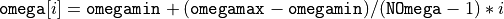
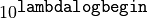
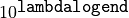

5. Input files¶
Parameter file (param.in)
The format of the parameter file is the “name = value” pair format.
#means a comment. In other words, a#character and the subsequent part in a line will be ignored.A blank line is skipped.
The variables for which default value is not given are mandatory.
# character means comment
statistics = "fermion" # stats.
beta = 100.0 # inv. temp.
### continued ###
INPUT/OUTPUT
Name
Type
Default value
Description
statistics
String
—
Choose “fermion” or “boson”.
beta
Double
—
The inverse temperature
filein_G
String
Gtau.in
The name of an input file for Green’s function.
column
Integer
1
The column number where the values of G(tau) are stored in the
filein_G file.fileout_spec
String
spectrum.out
The name of output file of spectrum.
fileout_pade
String
pade.out
The name of output file of spectrum calculated by the Pade approximant.
OMEGA
Name
Type
Default value
Description
NOmega
Integer
1001
The number of omega to be calculated.
omegamin
Double
-4
The minimum value of omega.
omegamax
Double
4
The maximum value of omega.
Note: The i-th omega where i=[0:Nomega) is given by .
SVD
Name
Type
Default value
Description
SVmin
Double
1e-10
Truncation value of singular values.
ADMM
Name
Type
Default value
Description
lambdalogmesh
Double
0.2
The log mesh of lambda.
lambdalogbegin
Double
0
The log value of maximum lambda. lambda_max is given by .
lambdalogend
Double
-1
The log value of minimum lambda. lambda_min is given by 
Nlambda
Integer
—
The number of lambda to be calculated.
penalty
Double
10.0
The value of penalty coefficient. If negative, penalty is optimized during the iteration starting with its absolute value.
tolerance
Double
1e-6
The criteria of convergence.
maxiteration
Integer
1000
The maximum number of iterations.
printlevel
Integer
2
0; minimum, 1; moderate, 2; verbose.
SpM-Pade
Name
Type
Default value
Description
PadeEta
Double
0.0
The weight of the spectrum by the Pade approximant.
filein_Gsigma
String
Gtau.in
The name of input file for errors of Green’s function.
column_sigma
Integer
1
The column number where the errors of G(tau) are stored in the
filein_Gsigmafile.g_sigma
Double
inf
The errors of G(tau). If this is inf (default value), the errors will be loaded from a file specified by
filein_Gsigma.NSamplePade
Integer
30
The number of random samples (with noise) will be used to calculate the expected value and the standard deviation of the spectrum by the Pade approximant.
Green’s function (Gtau.in)
In SPM, the values of Green’s function is only used for calculation, i.e. tau is automatically determined by the beta and the step. Please indicate the column number where the values of G(tau) are stored by “column” in the parameter file.